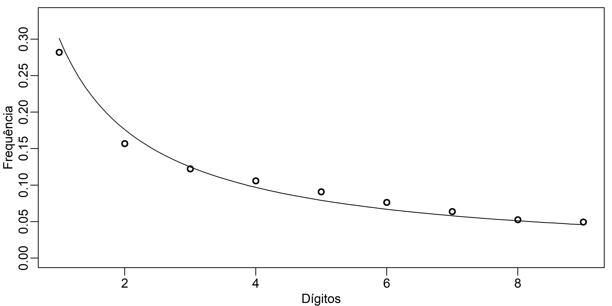

Benford
O que é a lei de Benford1
A lei de Benford também é conhecida como a lei do primeiro dígito. A partir dos dados de uma variável podemos extrair todos os seus primeiros dígitos significativos. Por exemplo, o primeiro dígito significativo de \(\pi\) é 3, e de 0.065 é 6. Então, podemos calcular a frequência dos dígitos de 1 a 9.
Seja o conjunto de dados com 10 valores abaixo:
set.seed(1)
x <- rnorm(10,500,200)
x [1] 374.7092 536.7287 332.8743 819.0562 565.9016 335.9063 597.4858 647.6649
[9] 615.1563 438.9223Os primeiros dígitos desses valores são 3, 5, 3, 8, 5, 3, 5, 6, 6 e 4, e a frequência com que eles apareceram no conjunto de dados foi:
x1 <- c(3, 5, 3, 8, 5, 3, 5, 6, 6, 4)
table(x1)x1
3 4 5 6 8
3 1 3 2 1 Ou seja, os valores 4 e 8 apareceram uma única vez, o 6 duas vezes, e os 3 e 5 ocorreram três vezes.
Será que existe algum padrão na distribuição das frequências dos primeiros dígitos de um conjunto de dados que ocorre naturalmente? Podemos pensar que todos os dígitos, de 1 a 9 deveriam ter a mesma frequência. Mas essa homogeneidade esperada não ocorre e, além disso, parece existir um padrão. Muitos conjuntos de dados, inclusive dados contábeis e econômicos, mostram que o dígito 1 é aquele que mais aparece. em torno de 30%.
A Lei de Benford diz que a frequência relativa dos primeiros dígitos significativos deve ser conforme mostrado na Table 1.
| Valores | 1 | 2 | 3 | 4 | 5 | 6 | 7 | 8 | 9 |
|---|---|---|---|---|---|---|---|---|---|
| Frequência | 0.301 | 0.1761 | 0.1249 | 0.0969 | 0.0792 | 0.0669 | 0.058 | 0.0512 | 0.0458 |
Podemos representar a Table 1 como um gráfico de barras (Figure 1).
As probabilidades da Table 1 e da Figure 1 para o primeiro dígito \(d\) (\(d \in \{1, \cdots, 9 \}\)), as quais satisfazem a lei de Benford são dadas por
\[ P(d) = log_{10} \left( 1 + \frac{1}{d} \right) \]
w <- 1:9
round(log10(1+1/w),4)[1] 0.3010 0.1761 0.1249 0.0969 0.0792 0.0669 0.0580 0.0512 0.0458Uma breve explicação
A primeira ideia é que os dados que se adequam à lei de Benford tem crescimento exponencial, ou seja, algo do tipo
\[ f(t) = t_0 (1 + r)^t \tag{1}\]
em que, por exemplo, \(t\) é o tempo, \(t_0\) é o valor de \(f(t)\) no tempo 0, e \(r\) é a taxa de crescimento.
Juros compostos
Como um exemplo, vamos trabalhar a ideia de juros compostos, em que o juro incide sobre o capital inicial e sobre os juros acumulados. A expressão para o cálculo de juros compostos tem a mesma estrutura da Equation 1, ou seja,
\[ M = C (1 + i)^t \] em que \(M\) é o montante no instante \(t\), \(C\) é o capital inicial quando \(t=0\), e \(i\) é a taxa de juros fixa. Observe os dados abaixo. Eles foram obtidos usando um capital inicial de R$100,00 com uma taxa de crescimento de 2.5% por período. Observa que, inicialmente, o primeiro dígito significativo igual a 1 aparece nos 28 primeiros valores. Depois, o crescimento é mais rápido e o sistema apresenta 16 valores com o primeiro dígito significativo igual a 2. O crescimento se acentua e o dígito 3 aparece nos próximos 12 valores. Como o capital cresce cada vez mais rápido, os próximos dígitos aparecem cada vez menos. Veja o dígito 9, ele aparece apenas 5 vezes. Logo após, o dígito 1 aparece novamente por mais 28 períodos.
# Juros compostos
c <- 100
i <- 0.025
t <- 1:190
m <- c*(1+i)^t
m [1] 102.5000 105.0625 107.6891 110.3813 113.1408 115.9693
[7] 118.8686 121.8403 124.8863 128.0085 131.2087 134.4889
[13] 137.8511 141.2974 144.8298 148.4506 152.1618 155.9659
[19] 159.8650 163.8616 167.9582 172.1571 176.4611 180.8726
[25] 185.3944 190.0293 194.7800 199.6495 204.6407 209.7568
[31] 215.0007 220.3757 225.8851 231.5322 237.3205 243.2535
[37] 249.3349 255.5682 261.9574 268.5064 275.2190 282.0995
[43] 289.1520 296.3808 303.7903 311.3851 319.1697 327.1490
[49] 335.3277 343.7109 352.3036 361.1112 370.1390 379.3925
[55] 388.8773 398.5992 408.5642 418.7783 429.2478 439.9790
[61] 450.9784 462.2529 473.8092 485.6545 497.7958 510.2407
[67] 522.9967 536.0717 549.4734 563.2103 577.2905 591.7228
[73] 606.5159 621.6788 637.2207 653.1513 669.4800 686.2170
[79] 703.3725 720.9568 738.9807 757.4552 776.3916 795.8014
[85] 815.6964 836.0888 856.9911 878.4158 900.3762 922.8856
[91] 945.9578 969.6067 993.8469 1018.6931 1044.1604 1070.2644
[97] 1097.0210 1124.4465 1152.5577 1181.3716 1210.9059 1241.1786
[103] 1272.2080 1304.0132 1336.6136 1370.0289 1404.2796 1439.3866
[109] 1475.3713 1512.2556 1550.0620 1588.8135 1628.5338 1669.2472
[115] 1710.9784 1753.7528 1797.5967 1842.5366 1888.6000 1935.8150
[121] 1984.2104 2033.8156 2084.6610 2136.7775 2190.1970 2244.9519
[127] 2301.0757 2358.6026 2417.5676 2478.0068 2539.9570 2603.4559
[133] 2668.5423 2735.2559 2803.6373 2873.7282 2945.5714 3019.2107
[139] 3094.6910 3172.0583 3251.3597 3332.6437 3415.9598 3501.3588
[145] 3588.8928 3678.6151 3770.5805 3864.8450 3961.4661 4060.5027
[151] 4162.0153 4266.0657 4372.7173 4482.0353 4594.0862 4708.9383
[157] 4826.6618 4947.3283 5071.0115 5197.7868 5327.7315 5460.9248
[163] 5597.4479 5737.3841 5880.8187 6027.8392 6178.5351 6332.9985
[169] 6491.3235 6653.6066 6819.9467 6990.4454 7165.2065 7344.3367
[175] 7527.9451 7716.1437 7909.0473 8106.7735 8309.4428 8517.1789
[181] 8730.1084 8948.3611 9172.0701 9401.3719 9636.4062 9877.3163
[187] 10124.2492 10377.3555 10636.7894 10902.7091Vamos agora extrair os primeiros dígitos significativos do nosso conjunto de dados.
dddd <- as.data.frame(m)
aux1 <- c()
for (i in 1:dim(dddd)[1]) {
n <- as.integer(dddd[i,1])
aux2 <- c()
while (n > 0) {
r = n %% 10
aux2 <- c(aux2,r)
n = n %/% 10
}
ll <- aux2[length(aux2)]
aux1 <- c(aux1,ll)
}Observamos a distribuição de frequências destes valores abaixo.
#
tt <- table(aux1)
round(tt/sum(tt),4)aux1
1 2 3 4 5 6 7 8 9
0.3158 0.1684 0.1263 0.0947 0.0737 0.0684 0.0579 0.0474 0.0474 Podemos comparar os dados teóricos apresentados na Table 1 e na Figure 1 com os dos juros compostos. Isto pode ser visto na Table 2.
| Valores | 1 | 2 | 3 | 4 | 5 | 6 | 7 | 8 | 9 |
|---|---|---|---|---|---|---|---|---|---|
| Teórico | 0.301 | 0.1761 | 0.1249 | 0.0969 | 0.0792 | 0.0669 | 0.058 | 0.0512 | 0.0458 |
| Exemplo | 0.3158 | 0.1684 | 0.1263 | 0.0947 | 0.0737 | 0.0684 | 0.0579 | 0.0474 | 0.0474 |
Multiplicação de valores (fraudes contábeis)
Dados contábeis e econômicos geralmente são o resultado da multiplicação de vários números. Quando temos esse caso, os dados se aproximam da distribuição de Benford. Por isto essa distribuição é usada para identificar fraudes. Se alguém alterar os dados contábeis de um conjunto de dados por meio de fraudes, esse erro poderá se apresentar quando compararmos a frequência dos primeiros dígitos com a distribuição de Benford.
Por exemplo, vamos gerar dados a partir de três distribuições de probabilidades, uma normal (N(200,25)), outra qui-quadrado (\(\chi^2(5)\)) e uma uniforme (U(0,1)). Geramos 10 mil valores aleatórios a partir de cada distribuição e alocamos em três coluna, conforme foram gerados.
set.seed(1)
dn <- rnorm(10000,200,5)
dp <- rchisq(10000,5)
du <- runif(10000,0,1)
da <- data.frame(dn,dp,du)
head(da) dn dp du
1 196.8677 2.048481 0.55955577
2 200.9182 2.720009 0.16710544
3 195.8219 1.349506 0.07304196
4 207.9764 2.688898 0.64984458
5 201.6475 3.190323 0.36573156
6 195.8977 2.449519 0.23948351Depois fizemos o produto dos valores dispostos em cada linha do conjunto de dados.
da2 <- data.frame(da,"dn.dp.du" = dn*dp*du)
head(da2) dn dp du dn.dp.du
1 196.8677 2.048481 0.55955577 225.65758
2 200.9182 2.720009 0.16710544 91.32301
3 195.8219 1.349506 0.07304196 19.30227
4 207.9764 2.688898 0.64984458 363.41084
5 201.6475 3.190323 0.36573156 235.28273
6 195.8977 2.449519 0.23948351 114.91737Agora vamos obter o primeiro dígito da última coluna dos dados apresentados acima e, então, comparar a frequência deles com a distribuição teórica de Benford.
dt <- dn*dp*du
dddd <- as.data.frame(dt)
aux1 <- c()
for (i in 1:dim(dddd)[1]) {
n <- as.integer(dddd[i,1])
aux2 <- c()
while (n > 0) {
r = n %% 10
aux2 <- c(aux2,r)
n = n %/% 10
}
ll <- aux2[length(aux2)]
aux1 <- c(aux1,ll)
}
ddt <- aux1
#
ttt <- table(ddt)
reat <- round(ttt/sum(ttt),4)
#
x2 <- seq(1,9,0.1)
teo2 <- round(log10(1+1/x2),4)Na Figure 2, observamos os dados gerados aleatoriamente (sem fraude), ou seja, a frequência dos primeiros dígitos da coluna que representa o produto da multiplicação dos valores gerados pelas distribuições propostas anteriormente. Estes valores são representados pelos pontos, enquanto que, a distribuição teórica é representada pela curva (linha). É possível notar uma grande concordância entre os pontos e a curva.

Footnotes
Caso encontre erros, queira fazer comentários, ou trocar uma ideia sobre o artigo, por favor, me escreva: omarcnpereiraead@gmail.com↩︎